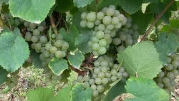
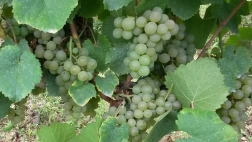

Varietals of the Ascoli Piceno Province
THE REDS: Absorbing the Marche Sun and Drawing Upon the Minerals of the Local Soils
The basic ‘building block’ grapes of the Piceno areas historically were reds --- the full-bodied Montepulciano and the medium-bodied Sangiovese grape, which are combined into a blend known as Rosso Piceno Superiore and Rosso Piceno.
The Montepulciano is a vigorous, late-ripening grape that provides a deep ruby color and a fruity, ‘big red’ taste. It offers berry flavor and a chocolate texture that provides a wonderful compliment to red sauces and meats. [It is not to be confused with the DOCG Montepulciano originating in the Tuscan town that bears its name.]
The Sangiovese is one of the most prolific of all Italian varietals. The Sangiovese’s vigorous growth must be tempered by constant vineyard management in order to ensure that its tannins are both ripe and soft. It ripens late but keeps its natural acidity thus providing a fresh taste to a blend such as Rosso Piceno Supiore.
The Sangioves, but more frequently, the Montepulciano grapes are also combined with Cabernet Sauvignon or Petit Verdot to form blends known as Offida Rosso and Marche Rosso Rosso. Both of the above blends are often aged in French and Slovonian oak for periods ranging from 12 to 36 months.
Rosso Piceno Superiore and Rosso Piceno (DOC)
Rosso Piceno Superiore and Rosso Piceno comprise the red grape blends for which the DOC zone is known. They combine two well-known Italian varietals, the Montepulciano and Sangiovese grapes. These varietals were first recognized with the DOC designation in 1969. Wines with the “Rosso Piceno” or “Piceno” DOC title can be produced only with grapes that are grown in the Marche Region. According to the production standards of the Italian government, the percentages of the two main grape varietals in Rosso Piceno Superiore or Rosso Piceno must fall in the following ranges
Wines with the “Rosso Piceno” or “Piceno” DOC title can be produced only with grapes that are grown in the Marche Region. According to the production standards of the Italian government, the percentages of the two main grape varietals in Rosso Piceno Superiore or Rosso Piceno must fall in the following ranges:
- Montepulciano: from 35 to 85%;
- Sangiovese: from 15 to 50%.
The grapes used to produce Rosso Piceno DOC must be cultivated within an extensive area of the Marche region that includes the provinces of Macerata, Fermo, Ascoli Piceno, and Ancona. The northern boundary of this zone is the Metauro River while the southern boundary is the Tronto River (which also constitutes the border between the Marche and Abruzzo Regions) with the western boundary beginning with the Apennine mountain range.
The production zone of Rosso Piceno Superiore DOC is much smaller and comprises just the 13 southernmost towns of the Ascoli Piceno province.
The clay soils of this area, combined with the south and southeast exposure of the selected vineyards, combine to expose the grapes to the hot summer sun that, in turn, produces wine with an intense red ruby color.
“The sun of central Italy bestows on the Rosso Piceno Superiore a tantalizing scent of cherry, currant, and dried plums,” says Marco Pignotti, winemaker at the Cantine dei Colli RIpani. “The balance and fullness of the wine perfectly compliment grilled meats.” The maximum production of grapes per hectare must not be more than 12 tons while the finished wine must ensure it has a minimum natural alcohol content of at least 11.5%.
The first Rosso Piceno Superiore to be sold in the marketplace was bottled by Tenuta Cocci Grifoni in San Savino di Ripatransone (AP) in 1970, from grapes harvested in 1969. The estate is still among the most esteemed wine producers of the Piceno wine making region.
The warm, dry summers of the Ascoli Piceno Province allow for an intense concentration of sugar, aided by the fact that the grapes can be grown on long southern exposures on hills that run from west to east out of the Appenine Mountains toward the Adriatic Sea. The province averages rainfall of 750 mm and has mainly clay soil that is rich in trace minerals, but which is also capable of quickly draining any excess water, thanks to both the slopes and the permeability of the ground itself.
- Colour: ruby red, sometimes turns pomegranate-coloured through aging.
- Aroma: complex, with notes of plum, berry, and currant.
- Flavour: savory, balanced, pleasantly dry, and low in tanins.
- Minimum total alcohol content by volume: 12% vol
- Minimum total acidity: 4, 5 g/l
- Minimum non-reducing extract: 21 g/l
Offida Rosso DOC
Offida Rosso DOC is a red blend formed with a minimum of 50% Montepulciano and 30% Cabernet Sauvignon, along with the possible presence of additional non-aromatic local red grapes.
The Offida Rosso blend has built a reputation for intensity, structure, and luscious taste that exhibits the finest qualities of the native local Montepulciano enhanced by the sophistication of the Cabernet Sauvignon grape. Many local vineyards choose to age the Offida Rosso with as much as 18 to 24 months in French or Slovonian oak.
Both the Leo Ripanus from Colli Ripani (70% - Montepulciano / 30% - Cabernet Sauvignon) and the Villa Piatti Offida Rosso from Collevite (70% - Montepulciano / 30% Cabernet Sauvignon) are outstanding examples of this blend.
The result is an aroma characterized by dark ripened cherries, currants, red fruits, and even a touch of black pepper.
Marche Rosso IGT
The IGT, similar to the French Vin de Pays, is utilized by those producers not wanting to work within the confines of Italy’s DOC regulations. The result is wines of high Montepulciano content that do not ‘fit’ the required specifications for inclusion in DOC blends such as Rosso Piceno Superiore, Rosso Piceno, or a closely-related blend from the central Marche region, Rosso Conero.
The IGT categorization can also combine red grape varietals other than Montepulciano and Sangiovese. Prime examples of the Marche Rosso IGT are:
-- The outstanding Khorakhane from Cantine dei Colli Ripani, comprised of Montepulciano (95%) and Cabernet Sauvingnon (5%). Only 3,000 bottles made in the normal year!
-- Another is the Villa Piatti Marche Rosso from Collevite, comprised of Montepulciano (85%) and Petit Verdot (15%).
Both of these vineyards age their Marche Rosso for up to 18 months in French or Slovonian oak, producing a luscious feel and smooth tanins that combine to deliver light chocolate hints over a foundation of ripened red berries.
Along with the Cabernet Sauvignon and Petit Verdot, varietals such as Merlot and Sangiovese also can be combined in varying percentages in addition to the Montepulciano staple.
No two Marche Rosso IGTs are the same … attention to label details is a must! But that’s the fun of it.
Vernaccia Nera (DOCG)
At the beginning of 20th century, less than 50 acres of Vernaccia Nera grape was cultivated. Today, there are about 90 acres, virtually all of them in Marche Region (some in nearby Umbria) in the tiny Serrapetrona zone that is home to the Vernaccia Nera grape.
The Vernaccia di Serrapetrona was awarded its DOCG status in 2003. One of the smallest classified zones in Italy, its vineyards are situated towards the eastern-facing lower slopes of the Apennines at an altitude of 1476–1968ft (450–600m) above sea level. The wine-producing area covers Serrapetrona and parts of Belforte del Chienti and San Severino Marche, towns in the Province of Macerata.
Wine produced there is as unique as it is ancient. Historically linked to Dante's epic poem 'Divine Comedy', in which it was mentioned, the rare, sparkling red wine is generally made as a sweet or semi-sweet dessert wine, but can also be made in a secco style. The wine is produced from a local grape variety, Vernaccia Nera, that can be found almost exclusively in the Serrapetrona area.
The first fermentation uses half the grapes hand-picked in October; the remainder are dried on straw mats and added to the wine in January for its second fermentation. The third stage occurs after the wine has rested for a few months, and is then put into autoclaves (the Italian name for the sealed tanks used) where it undergoes the Charmat method (also known as the Martinotti method).
The end result is an intensely aromatic wine displaying a raspberry-red color, a bouquet of sweet red fruits such as strawberries and cranberries that are also echoed on the palate, with a hint of spice (black pepper accent), firm tannins and a bright acidity. The secco version makes a handsome partner for prosciutto, salami, dried sausages, and cheeses, while the sweeter style is best with desserts.
Sangiovese
One of the most classic and famous of the red varietals grown throughout the northern and central regions of Italy, Sangiovese serves as the sole grape or is blended in combination with other varietals to produce the great names of Italian winemaking --- Chianti, Brunello di Montalcino, Vino Nobile di Montepulciano, Torgiano Rosso, Rosso Conero, and Rosso Piceno Superiore.
Young Sangiovese has fresh fruity flavors of strawberry and a little spiciness, but it readily takes on oaky flavor when aged in barrels. While not as aromatic as other red wine varieties such as Pinot Noir, Cabernet Sauvignon, and Syrah, the Sangiovese grape often has a flavor of sour red cherries with earthy aromas and tea leaf notes. Wines made from Sangiovese usually have medium-plus tannins and medium-to-high acidity.
According to an old and imaginative local Romagnese tradition, the name of the grape comes from Sanctus Zeus, the go Jove of the Romans. The first historical news about the Sangiovese grape dates to the “Trattato della Coltivazione dell Vite” (the Treatise of Grape Growing), which dates to around 1600, by Solderini and “L’Agricoltore Sperimentato” (The Experienced Farmer) from 1726 by Trinci.

THE WHITES: Cool micro-climates and sea breezes yield tropical fruit accents with fine acidic crispness
White grapes have been the recent surprise in Piceno area. Led by the resurrection of the Pecorino grape and the refinement of the Passerina grape, the whites have proven a delicious compliment to the seafood dishes that comprise the famous coastal cuisine.
The Pecorino grape also exhibits the ability to sustain its vitality over three or four years, a wonderful, unusual characteristic for white wines. Some local vineyards have also begun to age it in French or Slovenia oak for up to 12 months.
Along with the Trebbiano grape, which is grown both in the Marche and Abruzzo regions, the Pecorino and Passerina grapes form a lovely “Falerio” blend. The Malvasia is also used in white table wine blends.
 

Pecorino (DOCG)
Jack Polidori ‘met’ the Pecorino grape for the first time in 1991 on his second trip to his grandfather’s hometown of Ripatransone, located in the Province of Ascoli Piceno at the southernmost reaches of the Marche Region.
Sent to Tenuta Cocci Grifoni by my cousin, Ido, a photojournalist at the time for Tuttoturismo magazine, I was advised that Signor Guido Cocci Grifoni was making some excellent wines with local varietals. Ido praised Grifoni’s delicious Rosso Piceno Superiore, but it was a white grape --- Pecorino --- that attracted Jack’s attention.
The Pecorino grape has been registered in the national catalogue of varieties since 1971 but was in danger of extinction due to limited interest among the area’s winegrowers. Native to the Ascoli Piceno area, its peculiar name is owed to the sheep that once grazed these mountain and valley environs, producing the milk that serves as the basis for the lovely variety pecorino cheese).
That day, Signor Grifoni described how he had discovered a crop (in 1982) of abandoned vines in the tiny municipality of Arquata del Tronto, just west of Ascoli Piceno, nestled along the Tronto River at the base of the Appenine Mountains. Over the ensuing 30 years, he achieved the coveted DOCG status for the Pecorino grapes that he brought back to life in the tiny zone of Offida (having previously obtained the DOC status in 2001).
The foothills of the Sibillini Mountains, near to the provincial capitol of Ascoli Piceno, roll eastward to the Adriatic Sea. This land, rich in clay and other trace minerals, experiences a full four seasons of weather yet the Pecorino grape displays hardiness to the area’s sometime harsh winters. Pecorino bunches are irregularly shaped cones with small to medium-sized grapes that are spherical and possessed of thin, yet firm skin. Uncharacteristically for a white wine, it offers unusual longevity, storing safely for up to three to four years.
Pecorino has a straw lighter yellow color and possesses a spicy, fruity scent. Its flavor recalls ripe, tropical fruit with a touch of banana. While acidic, it is smooth from the start and displays a clean finish, making it a perfect accompaniment for seafood. As one writer has noted, in addition to the famous fish dishes of the Marche region, the Pecorino also compliments the province’s cured meats such as the renowned Ciauscolo (a typical sausage of spreadable consistency).
Another grower of the Pecorino grape, Adriano Lorenzi, winemaker at the Collevite vineyard in nearby Montsampolo, remarks that the cool-loving white grape benefits from the sea breezes. Of his Villa Piatti Pecorino, with grapes originating largely in his family’s vineyard located in Ripatransone, Lorenzi says: “Pecorino is a red wine with a white dress.”
According to the Tenuta Cocci Grifoni web site, the Pecorino provides “…A balance of ‘exaggerated’ figures for a wine born of a white grape vine: high sugar concentration, acids level over 8 G/L, PH around 3, and net dry extract greater than 24 G/L.
The following additional historical information about Guido Cocci Grifoni’s work to resurrect the Pecorino grape is quoted directly the web site of Tenuta Cocci Grifoni):
“In the early eighties, Guido Cocci Grifoni’s research focused especially on native white varieties that could allow the production of wines other than the standard Trebbiano, Malvasia, and others. … Guido Cocci Grifoni began the bibliographic researched aimed at verifying the historical presence of ancient native white grape vines in the Piceno area.
“He did this with his friends and colleagues --- Giancarlo Moretti of Conegliano’s Experimental Institute for Viticulture, Leonardo Seghetti of Ascoli Piceno’s Agricultural Institute, and the noted Sommelier Teodoro Bugari, a person who was insrumetnal in the establishment the AIS Marche (the Marche Region Sommelier’s Association).
“Their research revealed that north of the Tronto River, 1,000 meters above sea level, near Arquata del Tronto, there was a tiny, virtually abandoned vineyard that was owned, at the time, by an 80 year-old man. Grifoni recollected: ‘One September morning in 1982, before the grape harvest, Giuseppe Frascarelli, Secretary of the Ascoli Piceno Chamber of Commerce, and the surveyor, Piergiorgio Liberati, and I traveled to Arquata del Trono, in the hamlet of Pescara.
“’Mr. Cafini himself show us a few vine shoots from 2-3 generations. That morning, we just tagged some shoots with adhesive tape. The following February, I went back to pick up the shoots and brought them back to the farm. I did grafting with the collaboration of Benardo Lacnciotti, who owned a farm in Offida.’
“The vines’ characteristics finally led to the decision to plant them in the northernmost area of the land. … The first sizable harvest goes back to 1990. … The first ‘Mother Plants’ vineyard planted in the 80s is still in existence.”
Passerina (DOCG)
Passerina (DOCG) Passerina is the Italian word for “sparrow”, a bird known to the country’s winegrowers for its appetite for ripe Passerina grapes. The suffix “—ina” means small, thus portraying the relative size of the grapes.
Many researchers have attempted to determine the origin of this white varietal but have yet to reach a firm conclusion. It is thought to be a mutation of the Biancame (Bianchello) grape.
Many vineyards in the Province of Ascoli Piceno, the southernmost of the Marche provinces, grow and bottle it as a stand-alone varietal, and also as part of the Falerio dei Colli Ascolani DOC blend. It is also utilized for a lovely sweet wine, known locally as a ‘Passito’ (allowing the grapes to lose their moisture content on the vine and build up a high sugar level).
Passerina vines are mid-sized with pentagon-shaped leaves with small grapes that grow in medium to large clusters with thick skin. The wine is light yellow in color and normally presents a light banana and ripe citrus taste. Passerina grapes have a high level of natural sugars and acidity, producing a very balanced wine that can be used as an aperitif or as an accompaniment to broiled or roasted fish.
While also grown in the Abruzzo, Emilia-Romagna, and Lazio regions, the Passerina grapes of the Marche region are known to offer a sharper and with more intense minerality, likely attributable to the clay soils that characterize the Ascoli Piceno province.
Passerina also is known as “Pagadebito Gentile”, “Campolese”, and Trebbiano di Teramo (after the Terramo hills overlooking to the north the Tronto River valley that separate the Marche and Abbruzzo regions).
Falerio (DOC)
Falerio, known officially as Falerio dei Colli Ascolani, is a DOC blend unique to the Province of Ascoli Piceno. In fact, it constitutes one of the southernmost DOCs in the Marche Region.
The name of the DOC allegedly traces back to Roman times and derives its name from the ancient Roman city of Faleria (now the modern day commune of Falerone). The Falerio blend combines many wines unique to the Marche region … somewhat rare Italian varietals that are seldom found elsewhere in Italy.
Grapes used in the Falerio blend include Trebbiano Toscano (a range of 25-50%); Passerina (a range of 10-30%); and Pecorino (a range of 10-30%). Additionally, up to a maximum of 20% of other white varietals (e.g., Malvasia) can also be used.
Light yellow in color, the Falerio serves as a refreshing appertif that often accompanies fruit, cheeses, and olives. It has an acidic structure that produces a clean, refreshing taste from initial sip to finish.
INCROCIO BRUNI, 54 (Marche IGT)
The Bruni 54 hybrid vine variety was created in 1936 by Prof. Bruno Bruni, who served in the Italian Ministry of Agriculture in the period 1930 to 1950. It was obtained by crossing by pollination the Sauvignon Blanc and Verdicchio cultivars. It is quite uncommon and exclusively grown in the Marche region. This vine variety had almost totally disappeared but in recent years, some vineyards in the Marche Region have begun projects to revive the old precious cultivars with Incrocio Bruni, 54 being a case in point.
Color:
Straw yellow with greenish highlights
Nose: Strong citrus notes including grapefruit, grapefruit zest and orange are followed by the smell of orange blossom, after which comes a salty note, typical of the Verdicchio that completes the aromatic sensation.
Taste: The wine opens softly and is followed by strong acidity, counterbalanced by the full flavor. Long, persistent citrus and savory notes are found through retro-olfactory.
Maceratino (DOC)
Maceratino is a light-skinned grape variety used almost exclusively in the Marche region on the Adriatic coast of central Italy to make delicately flavored wines that border on the pedestrian and are often blended with Trebbiano. Its main cultivation area is the town of Macerata and environs, from which the variety takes its name.
There are two sub-varieties of Maceratino named Ribona and Montecchiese, both of which are permitted for use in the Marche DOC Colli Maceratesi. It also has several aliases, including Aribona, Bianchetta and Uva Stretta.
Albana Secco
The Albana was the first Italian white wine to be awarded with the DOCG standard of quality. Its history dates back to ancient times when it was introduced by the Romans into what is now the Romagna region. Its home is in the hills of Romagna particularly near to the beautiful hillside town of Bertinoro.
The Albana Secco presents a golden color with fine copper reflections. It offers a fruity bouquet of orange and other citrus notes, a rich and round taste with excellent freshness. It is an outstanding accompaniment to grilled fish and poultry, and complimentary pasta dishes and sauces.
Legend says that in 435 A.D., the blonde and beautiful Galla Placidia, daughter of the emperor, Teodosio, one morning arrived to the first house of the village riding her white mare. The hospitable villagers offere her the Albana, a locally-grown sweet, full-bodied wine, in a humble cup made of terracotta. The princesses, entranced by the excellence of the nectar, remarked to the wine: “This is far too humble a way to drink you. You are meant to be drank from the gold cup [berti in oro].” From that point forward, the village was known as Bertinoro.
ITALIAN WINE DESIGNATIONS DOCG - DOC - IGT
Denominazione di Origine Controllata - "Controlled designation of origin") is a quality assurance label for Italian food products, especially wines and various cheeses (Denominazione di Origine Protetta It is modeled after the French AOC. Instituted in 1963 and was overhauled in 1992 in order to comply with the equivalent EU law on Protected Designation of Origin which came into effect that year.
There are three levels of labels:
- DO —Denominazione di Origine (designation of origin, seldom used)
- DOC — Denominazione di Origine Controllata (controlled designation of origin)
- DOCG — DOC — Denominazione di Origine Garantita (controlled designation of origin guaranteed)
All three require that a food product be produced within the specified region using defined methods and that defined, high quality standards are met.
The need for DOCG identification arose when the DOC designation was, in the view of many Italian food industries, awarded too liberally to different products. A new, more restrictive identification was then created as similar as possible to the previous one so that buyers could still recognize it, but would recognize a qualitative difference.
The more prestigious DOCG-labeled wines, for example, are analyzed and tasted by government–licensed personnel before being bottled. To prevent later manipulation, DOCG wine bottles then are sealed and affixed with a numbered governmental seal across the cap or cork.
SOURCE: https://en.wikipedia.org/wiki/Denominazione_di_origine_controllata
Indicazione Geografica Tipica (IGT) is the second of four classifications of wine recognized by the government of Italy. Created to recognize the unusually high quality of the class of wines known as Super Tuscans, IGT wines are labeled with the locality of their creation, but do not meet the requirements of the stricter DOC or DOCG DOC or designations, which are generally intended to protect traditional wine formulations such as Chianti or Barolo. It is considered broadly equivalent to the French vin de pays designation.
SOURCE: https://en.wikipedia.org/wiki/Indicazione_geografica_tipica